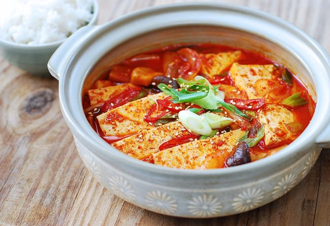

Dubu Jorim

Description
Dubu jorim is sliced and seared tofu that has been
simmered in a sweet and slightly spicy soy-based sauce. Lightly
crispy on the outside and soft on the inside, it’s an easy-to-prepare
side dish for breakfast, dinner, or a traditional Korean dosirak (packed lunch).
Ingredients
For the seared tofu
- 1 (15 to 18-ounce) package firm tofu
- 3 tablespoons rice flour
- 2 tablespoons canola or vegetable oil, or as needed
For the sauce
- 1 tablespoon sugar
- 1/3 cup soy sauce
- 1/3 cup water, plus more as needed
- 1 tablespoon gochugaru
- 2 scallions, thinly sliced, divided
Steps
- Prepare the tofu
- Make the sauce:i>
- Dredge and fry the tofu:
- Add the sauce:
- Plate and serve: